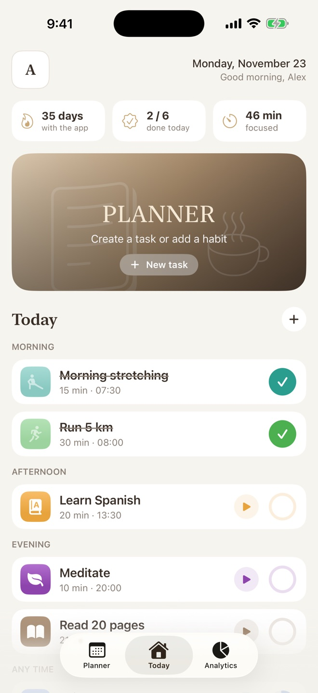
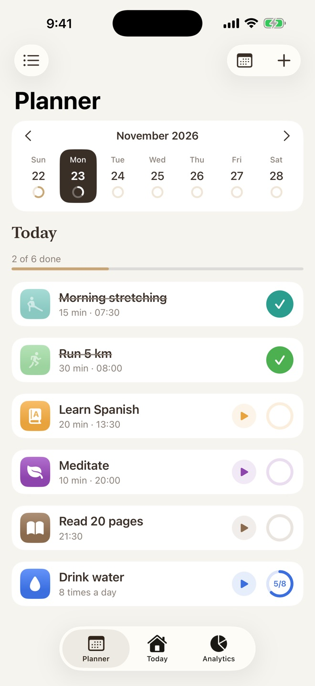
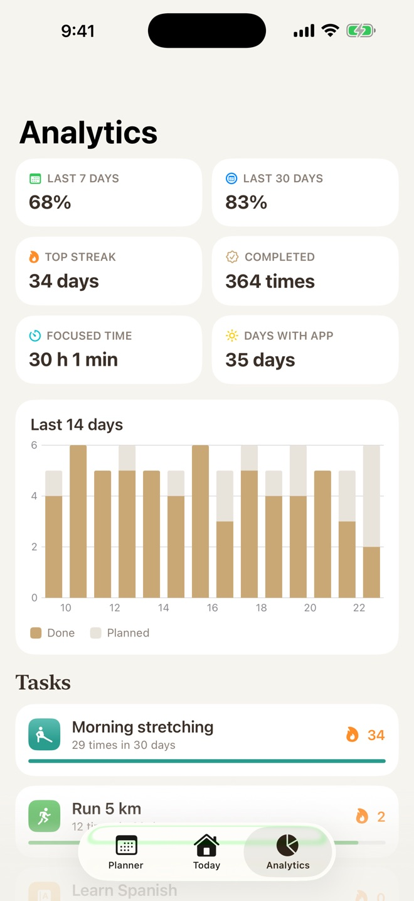
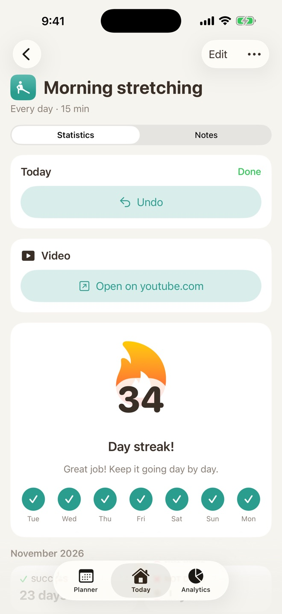
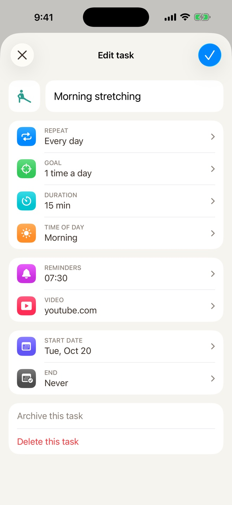
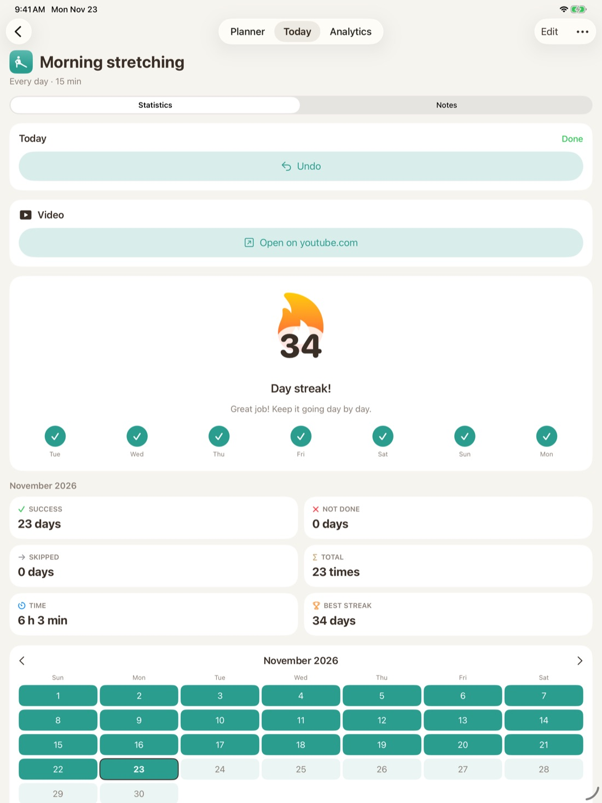

For iPhone and iPad
Your day, planned. Your habits, kept.
Tribal Task Tracker helps you plan tasks and habits, set reminders, time your focus and keep your streak going — day by day.

Everything a routine needs
Simple enough for one daily habit, flexible enough for a whole schedule.
Flexible repeats
Every day, chosen weekdays, dates of the month, every few days, or specific calendar dates.
Focus timer
Give a task a duration, press Start, and get a notification when the time is up.
Reminders
Set one or more reminder times. They stop for the day as soon as the task is done.
Streaks and goals
Build a day streak, set a goal like "8 times a day", and skip a day without losing track.
Clear analytics
Success rate for 7 and 30 days, focused time, top streaks and a 14-day chart.
Videos for your tasks
Attach a YouTube link or a video from your iPhone — a workout, a lesson — and play it while you do the task.
A calm, focused design
Warm colors, clear progress, and nothing you don't need.




Also on iPad
More room for your plans
On iPad, statistics, your streak and the monthly calendar fit on one screen. Tap any day in the calendar to mark it done or undo it.
Requires iOS or iPadOS 26.5 or later.

Private by design
No account, no sign-up, no ads and no tracking. Your tasks, history and videos are stored only on your device and never sent to us.
Read the privacy policy →